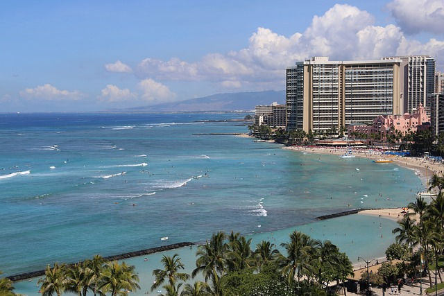

Hawaii

Green Sand Beach (Papakōlea), Big Island:
Green Sand Beach is one of only a few green sand beaches in the world. Located near South Point on the Big Island,
it gets its unique color from olivine crystals in the volcanic sand. The beach is remote, scenic, and perfect
for adventurous travelers willing to hike or ride to reach its shoreline.

Haleakalā Volcano, Maui:
Haleakalā is a massive shield volcano that forms more than 75% of the island of Maui. Known as the "House of the Sun,"
it offers breathtaking sunrise views from its summit, dramatic volcanic landscapes, and hiking trails
through one of Hawaii's most stunning national parks.

Waikiki, Oʻahu:
Waikiki is Honolulu’s most famous beach neighborhood, known for its golden sand, surfing culture, luxury hotels,
and lively nightlife. With Diamond Head crater as its backdrop, Waikiki blends tropical beauty with urban excitement,
making it a must-visit destination in Hawaii.
Image by Pixaday